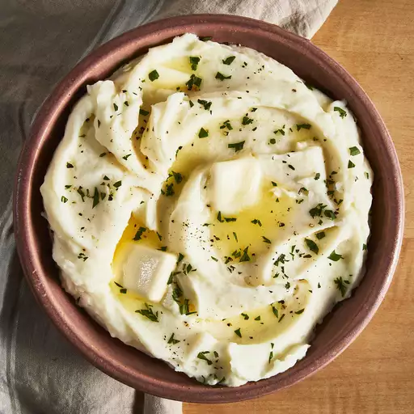

Mashed Potatoes

Ingredients
- Potatoes
- Garlic
- Milk
- Butter
Steps
- Bring a large pot of salted water to a boil.
Add potatoes and garlic, lower heat to medium, and simmer until potatoes are tender, 15 to 20 minutes.
- When the potatoes are almost finished, heat milk and butter in a small saucepan over low heat until butter is melted.
- Drain potatoes and return to the pot.
Slowly add warm milk mixture, blending it in with a potato masher or electric mixer until potatoes are smooth and creamy.
Season with salt and pepper.
Go Back